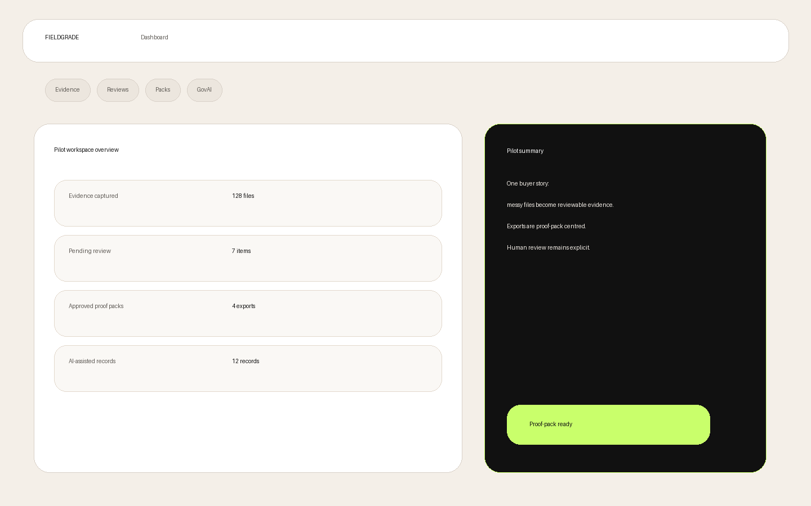
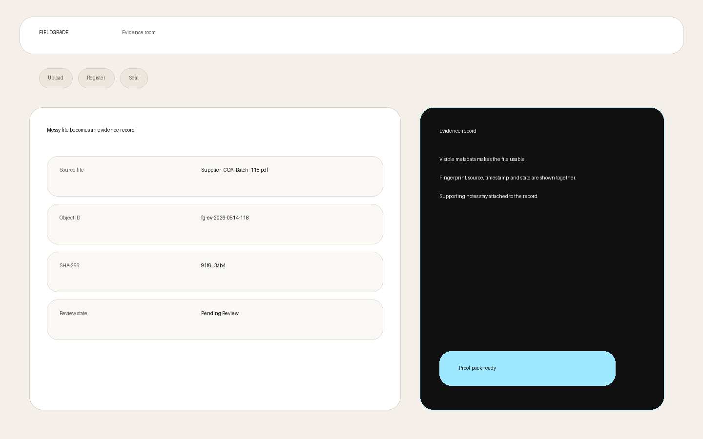
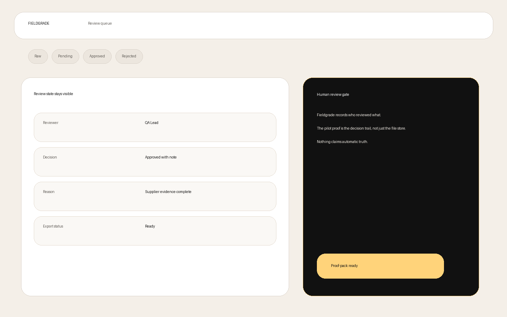
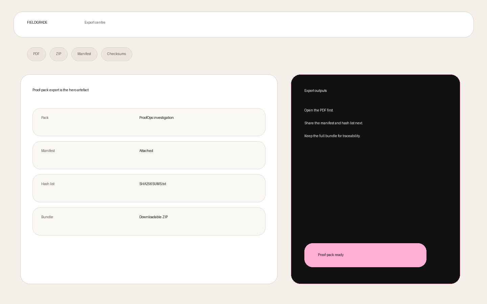
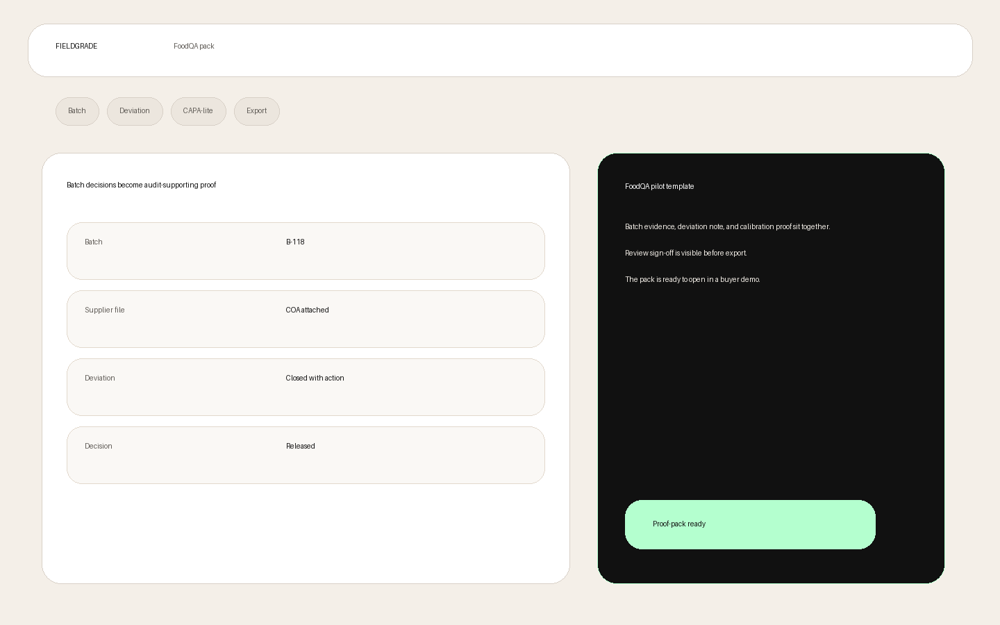
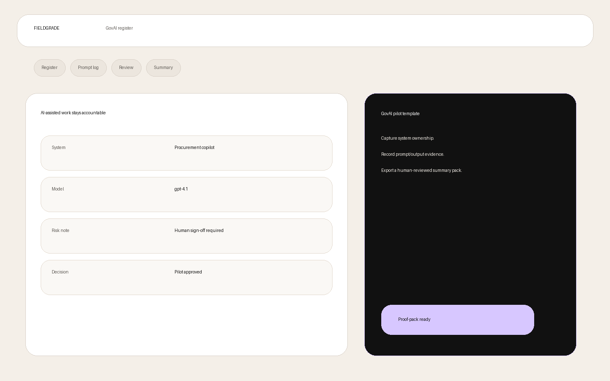

Capture
Bring in certificates, screenshots, spreadsheets, notes, supplier records, batch files, and AI outputs.
Fieldgrade is a local-first ProofOps workspace for small technical, QA, and AI-assisted teams that need to show what happened, who reviewed it, and why a decision was made.
Show the proof layer. Occlude the complexity layer.
Make the transformation obvious: from messy material to reviewed, sealed, exportable proof.
Bring in certificates, screenshots, spreadsheets, notes, supplier records, batch files, and AI outputs.
Name what the material is, where it came from, who owns it, and why it matters.
Lock identity with fingerprints, timestamps, manifests, and provenance events that can be replayed later.
Keep authority explicit with approve, reject, quarantine, and request-more-evidence states.
Produce proof packs with PDFs, ZIP bundles, manifests, provenance logs, and reviewer decisions.
Keep searchable, reviewable organisational memory without turning the product into a generic file cabinet.
Lead with the most concrete proof burden first, then reuse the same workflow model elsewhere.
Batch evidence, supplier records, deviations, AI summaries, and reviewer decisions sealed into one QA proof pack.
View FoodQAThe horizontal proof workflow for investigations, technical operations, suppliers, and review-heavy work.
View ProofOpsRecord AI-assisted work before it becomes an untraceable decision.
View GovAIThe evidence and provenance engine beneath the public workspace.
View CoreShow one stressful QA moment resolved cleanly, not a generic feature tour.
Start with Supplier_COA_Batch_118.pdf, a batch record, and a spreadsheet showing the discrepancy.
Show evidence type, source, batch context, uploader, timestamp, and SHA-256 fingerprint.
Attach an operator note, deviation comment, and AI-assisted summary clearly marked as a review aid only.
Display the bundle ID, canonical hash, manifest, included files, and provenance chain.
Move the record through Pending Review to Approved, Rejected, or Quarantined with reviewer notes.
Deliver a full internal pack and a client-safe pack with the same core proof but different exposure.
Fieldgrade needs trust signals before it needs grand claims.
Files are captured, records are fingerprinted, events are chained, review status is explicit, and exports are reproducible.
Fieldgrade separates capture, analysis, review, and approval. Evidence may be ingested automatically, but authority remains explicit.
Sensitive evidence should not need to leave your machine just to become organised.
AI outputs are not decisions until reviewed. Fieldgrade keeps the review trail.
Use clear navigation and dashboard labels on the buyer-facing surface.
Prove what happened. Protect what should not be exposed.
Illustrative visuals for the buyer-facing product story.





